CH14 — ep
episode一覧（サムネ付き / 綺麗なURL）
ep
Script Viewer
snapshot
guide
ブッダの教え【執着からの解放】 (CH14)
script 30/30
updated_at: 2026-01-13T09:30:14.308996Z
URL例:
/ep/CH14/001/thumb/
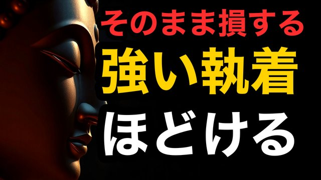
CH14-001
【執着】手放せないほど苦しい｜ほどける順番はこれ
script ✓
画像 —
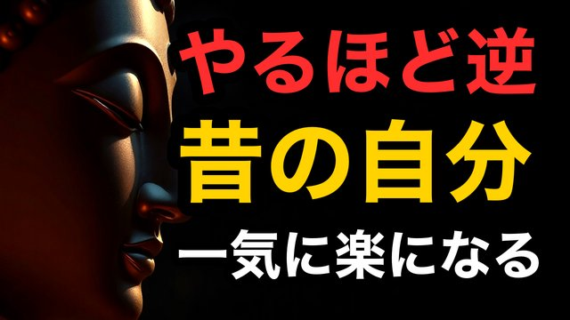
CH14-002
【過去】昔の栄光が忘れられない｜今を削る罠
script ✓
画像 —
CH14-003
【恨み】許せない人が頭から離れない｜切れる見方
script ✓
画像 —
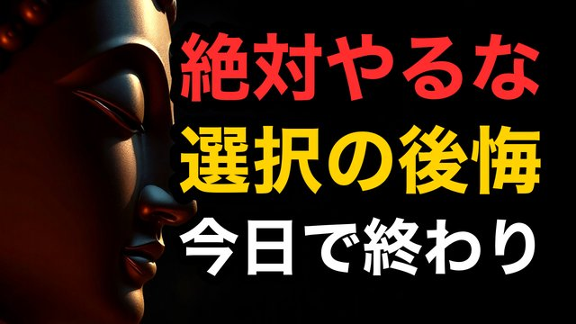
CH14-004
【後悔】選択の後悔が止まらない｜巻き戻しを終わらせる
script ✓
画像 —
CH14-005
【期待】期待するほど苦しい｜期待は鎖になる
script ✓
画像 —
CH14-006
【比較】同級生と比べるほど老ける｜比べない軸
script ✓
画像 —
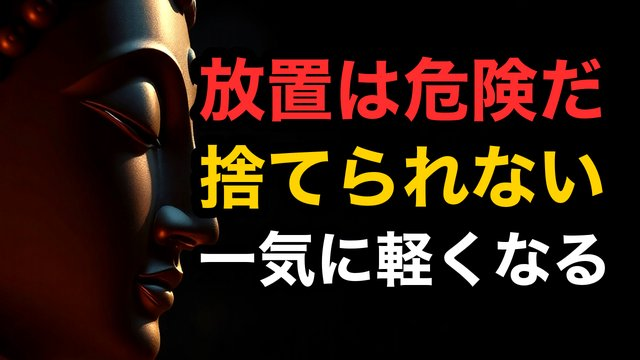
CH14-007
【物】捨てられないのは心の問題｜手放しは技術
script ✓
画像 —
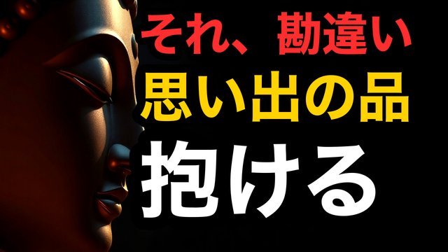
CH14-008
【思い出】思い出が捨てられない｜捨てずに楽になる方法
script ✓
画像 —
CH14-009
【怒り】怒りを握るほど損｜握らない練習
script ✓
画像 —
CH14-010
【寂しさ】寂しさを埋めるほど増える｜埋め方が逆
script ✓
画像 —
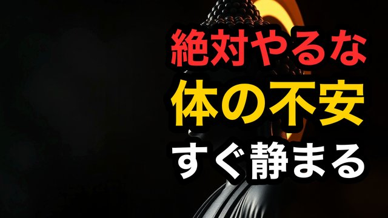
CH14-011
【健康不安】体の不安に飲まれる｜不安の増やし方をやめろ
script ✓
画像 —
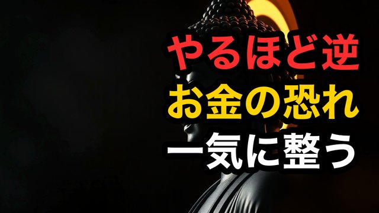
CH14-012
【お金不安】お金が怖くて握りしめる｜握るほど苦しい
script ✓
画像 —
CH14-013
【家族】家族を変えたい気持ち｜変えたいのは不安
script ✓
画像 —
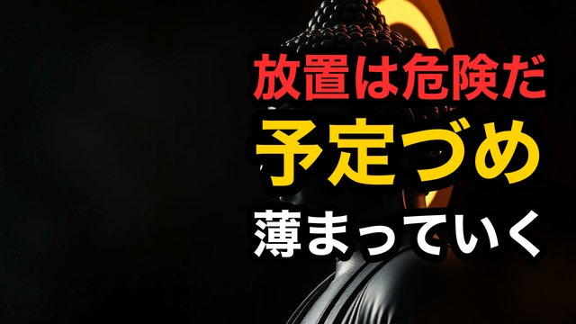
CH14-014
【孤独】予定で孤独を誤魔化す｜誤魔化すほど増える
script ✓
画像 —
CH14-015
【後悔】言い返せなかった悔しさ｜悔しさをほどく
script ✓
画像 —
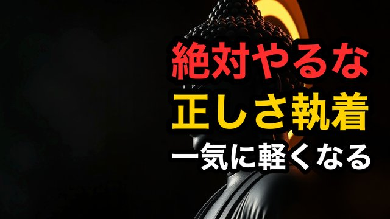
CH14-016
【執着】正しさへの執着｜正しさが人を壊す
script ✓
画像 —
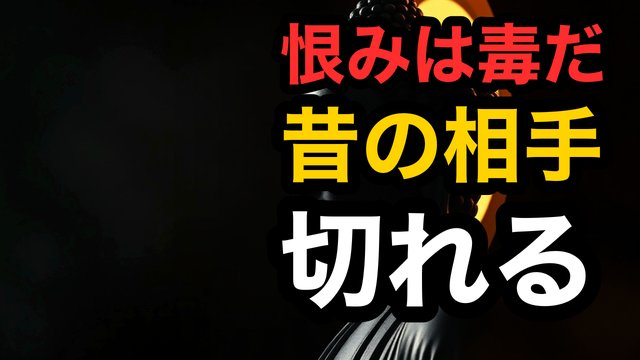
CH14-017
【怒り】昔の人間関係が許せない｜切るのは相手じゃない
script ✓
画像 —
CH14-018
【比較】自分だけ遅れた感覚｜遅れてないのに苦しい
script ✓
画像 —
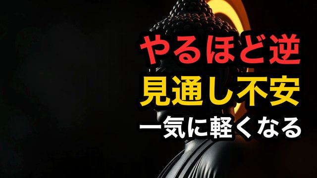
CH14-019
【不安】見通しが立たない｜見通しを求めるほど苦しい
script ✓
画像 —
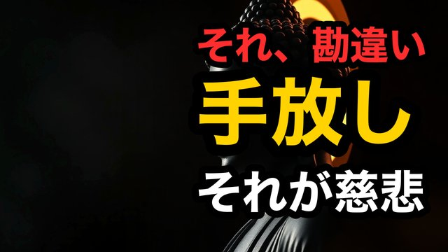
CH14-020
【執着】手放すと冷たくなる?｜手放しは慈悲だ
script ✓
画像 —
CH14-021
【物】物が増えるほど心が重い｜減らす順番
script ✓
画像 —
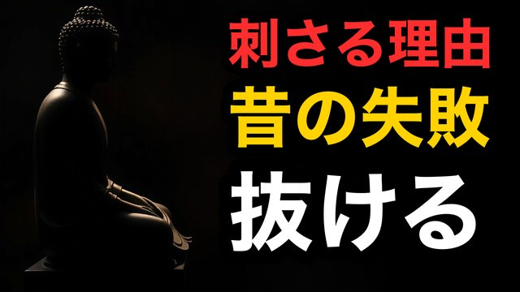
CH14-022
【過去】昔の失敗が刺さり続ける｜刺さる場所を抜く
script ✓
画像 —
CH14-023
【承認】認められたい苦しさ｜承認の鎖を外す
script ✓
画像 —
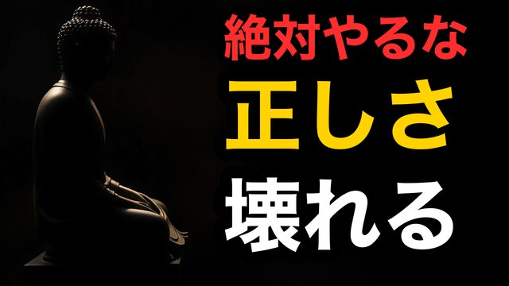
CH14-024
【恨み】許せない気持ちが正しいと思う人へ｜正しさは毒
script ✓
画像 —
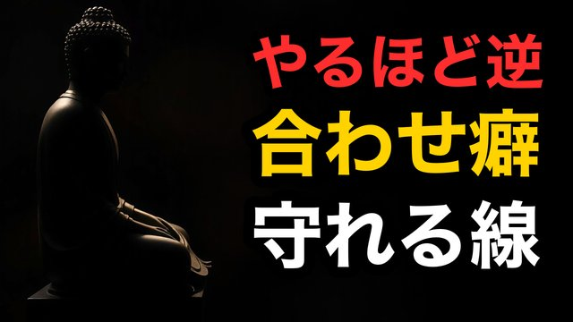
CH14-025
【孤独】ひとりが怖くて誰かに合わせる｜合わせるほど弱る
script ✓
画像 —
CH14-026
【不安】不安を消そうとするほど増える｜消さずに扱え
script ✓
画像 —
CH14-027
【執着】手放したいのに離れない｜離れない理由は一つ
script ✓
画像 —
CH14-028
【後悔】取り返せない時間が苦しい｜時間の鎖を外す
script ✓
画像 —
CH14-029
【寂しさ】寂しさを敵にするほど辛い｜味方に変える
script ✓
画像 —
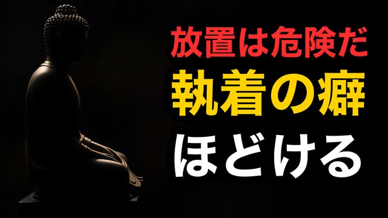
CH14-030
【救い】執着がほどける最後の視点｜残るのは安心
script ✓
画像 —